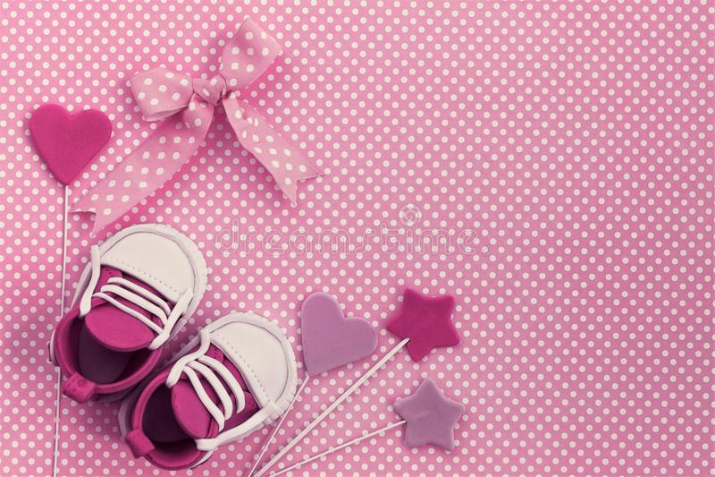
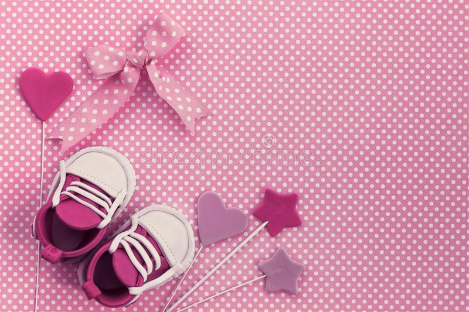

INDOOR PHOTOGRAPHY
Indoor photography refers to images captured inside, Indoor photography is like interior photography. These are without a specific editorial or commercial aim.

OUTDOOR PHOTOGRAPHY
Want to feel like your favorite relative came over and made you dinner? This comfort meal of smoked lamb and rice will quickly become a weekend favorite!
BOUDOIR PHOTOGRAPHY
Boudoir photography captures intimate and romantic images of subjects. They take place in a bedroom or dressing room environment.

MACRO PHOTOGRAPHY
Macro photography refers to photographing tiny subjects up close. Here, we use specialised lenses or photographic equipment.

BABY BUMPS & SHOWERS PHOTOGRAPHY
Newborn photography is the capturing of a newborn baby. This can be with or without other members of the family.
PETS PHOTOGRAPHY
Pet Photography is the act of photographing pets in a portrait manner. Examples of these could be photographing cats, birds or horses.

NIGHT PHOTOGRAPHY
Night photography refers to all photography taken at nighttime. You need to use different camera settings, techniques, and gear to capture low lit scenes.
WEDDING PHOTOGRAPHY
Wedding photography includes all activities relating to weddings. It will encompass portraiture, family photography, posing and even drone photography.

WILDLIFE PHOTOGRAPHY
Wildlife photography is about documenting animals in their natural habitats. Specialised equipment such as telephoto lenses are essential.


 
